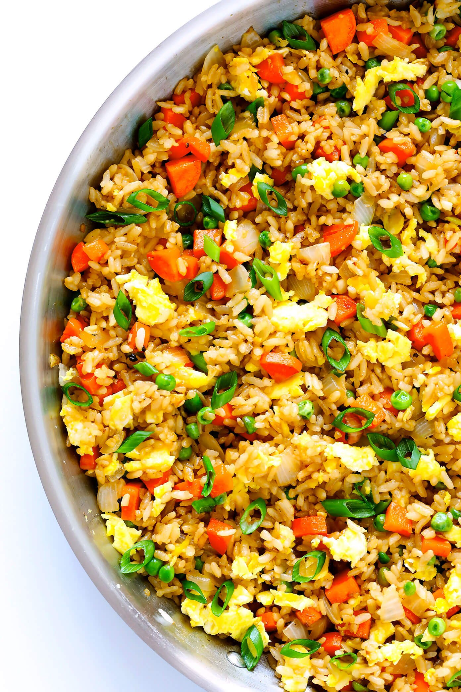

Fried Rice

Description: A quick, easy, and tasty serving of fried rice. Perfect for meal preparing healthy meals for the week.
Ingredients:
- Cooked, chilled rice
- Eggs
- Carrots, onions, green onions and peas
- Garlic
- Soy sauce
- Oyster sauce
- Toasted sesame oil
- Butter
Steps:
- Scramble eggs
- Saute veggies and garlic
- Stir fry rice
- Remove pan from heat
- Taste and season
- Serve!